Scene 1Warm-Up
▶ Start hereHow your Wonder Films lessons work1-minute videoOpen ▾
🎯 TodayI can…
- identify a threat to a park habitat and explain why it matters.
- write a habitat protection proposal that includes a problem, evidence, solution, and criteria.
- use evidence to make a claim about why my proposed solution would reduce harm.

🔎 Mystery specimenWhat animal is this?
What to do: Press Inspect specimen. Move the magnifying lens over the specimen, then tap 3 things you notice.
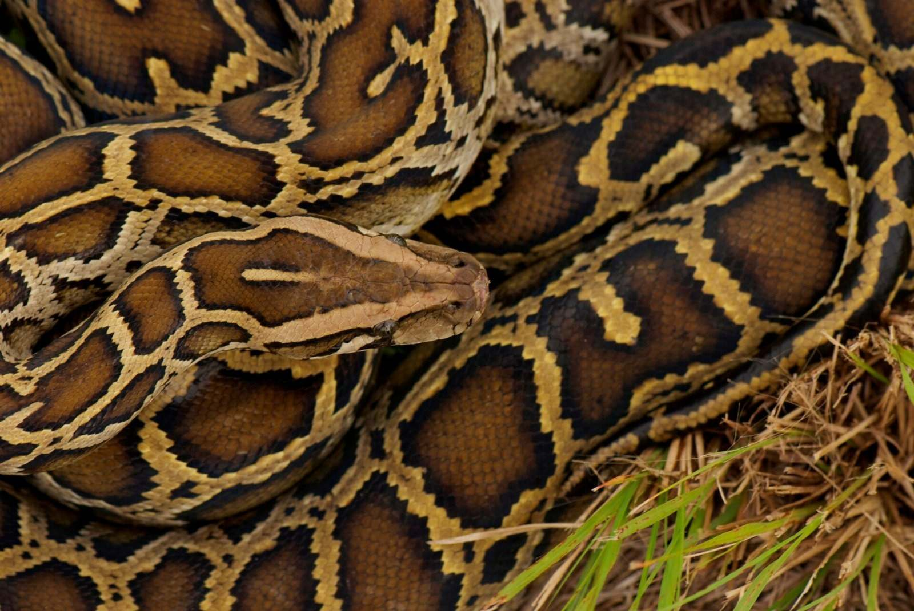
📚 Word WallWords scientists use
What to do: Tap or click each card to flip it and read what the word means.
Scene 2The Lesson
⚠️ Part 1What Threatens a Habitat?
Every habitat has things that could hurt it. Threats can come from pollution washing into a river, invasive species crowding out native ones, or too many visitors trampling a marsh. Some threats are slow, like roads and buildings creeping into wild land.
Scientists notice these problems by counting species, testing water, and tracking which plants are disappearing.
🎞️ Put the scenes in orderHow does a proposal come together?
What to do: Drag each photo into the film strip, from first to last. You can also tap a photo, then tap a frame. Get the order right and your strip becomes a movie.
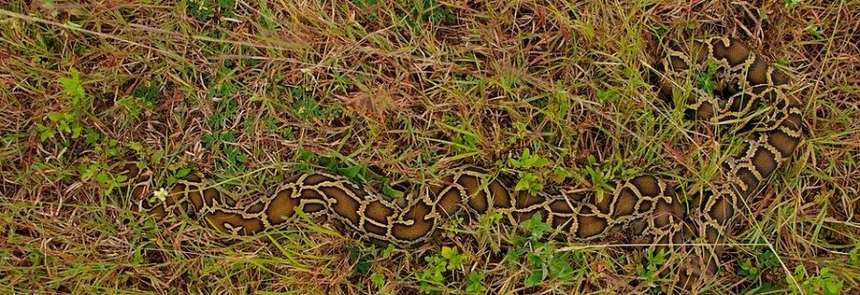
A friend says, "A good idea is enough. You don't need evidence." What does the python case show?
📋 Part 2The Four Parts of a Proposal
A habitat protection proposal has four parts. The problem: what's happening and why it matters. The evidence: facts that show the problem is real. The solution: what should be done. The criteria: how you'll know it worked.
A proposal without evidence is just an opinion. With evidence, it becomes a case.
🧪 The Footprint TestWhich trail protects the plants?
What to do: Follow the steps one at a time. You will pick, test, and then explain.
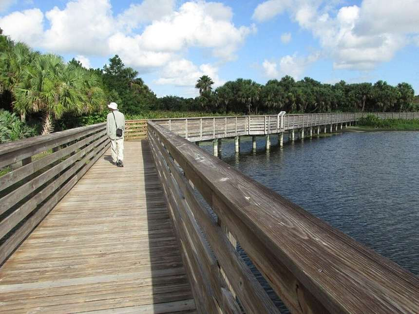
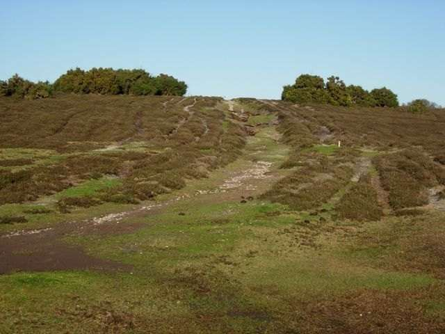
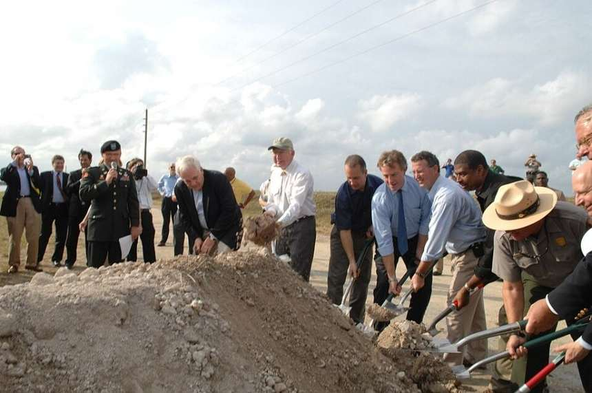
🗺️ Part 3Proposals Can Change a Place
In 2000, Congress approved a giant plan to bring water back across the Everglades, a region of about 18,000 square miles. Scientists had gathered evidence for years first, and work on the plan still goes on today.
🌊 The River ComebackFollow one Florida river through time
What to do: First, make a prediction. Then brush the glowing stop: drag across it (or tap it again and again) until the place shows.
Once people change a river, can a good plan bring it back?
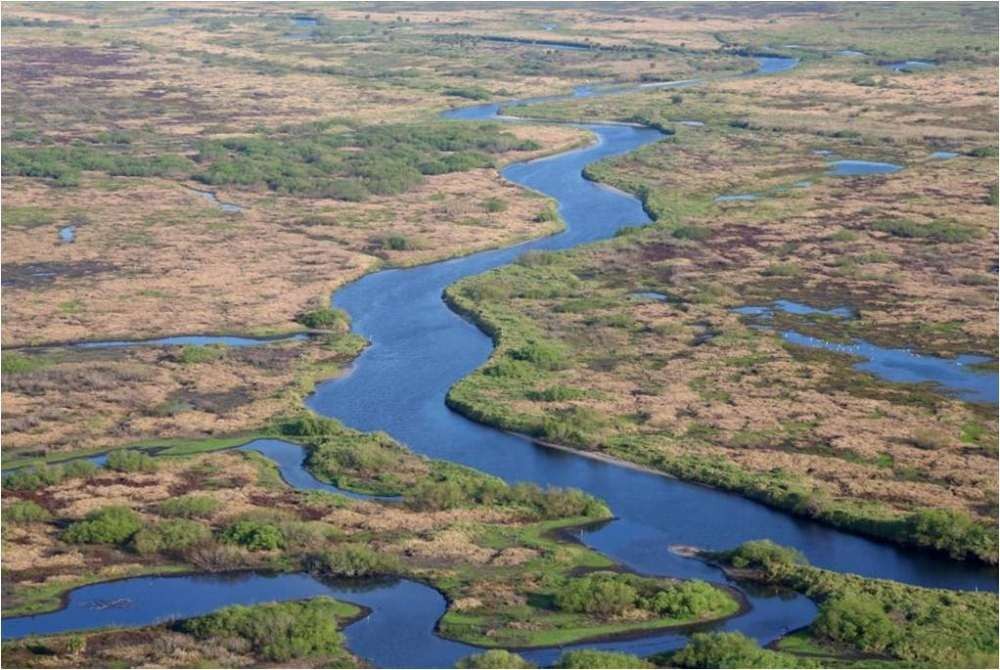
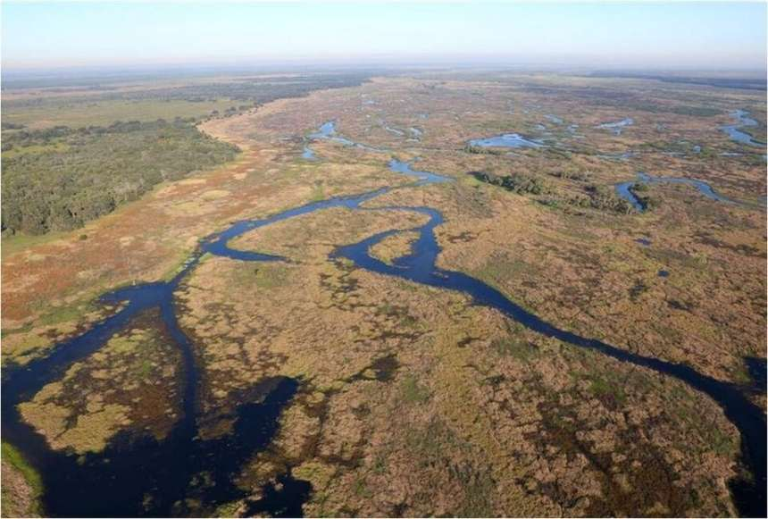
Stop 1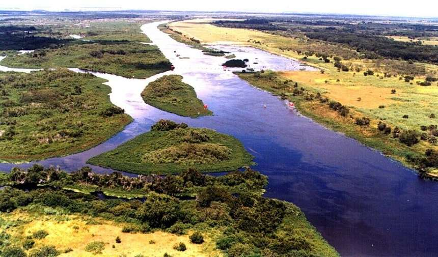
Stop 2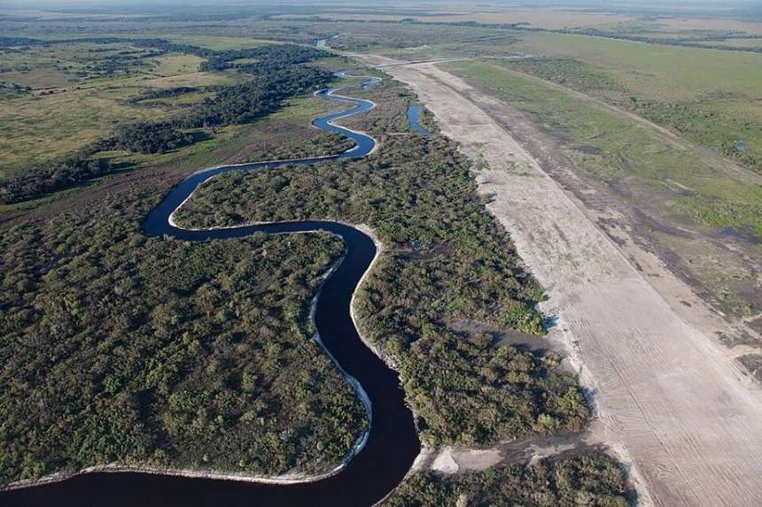
Stop 3 Stop 4
Stop 4A plan with evidence can bring a place back. The Kissimmee River proposal had a problem, evidence, a solution, and criteria: count the birds and fish. It took almost 30 years, and the counts show it's working.
A student's plan says, "Success means the river is nice." Is that a good criterion?
36,000 lionfish in one summer
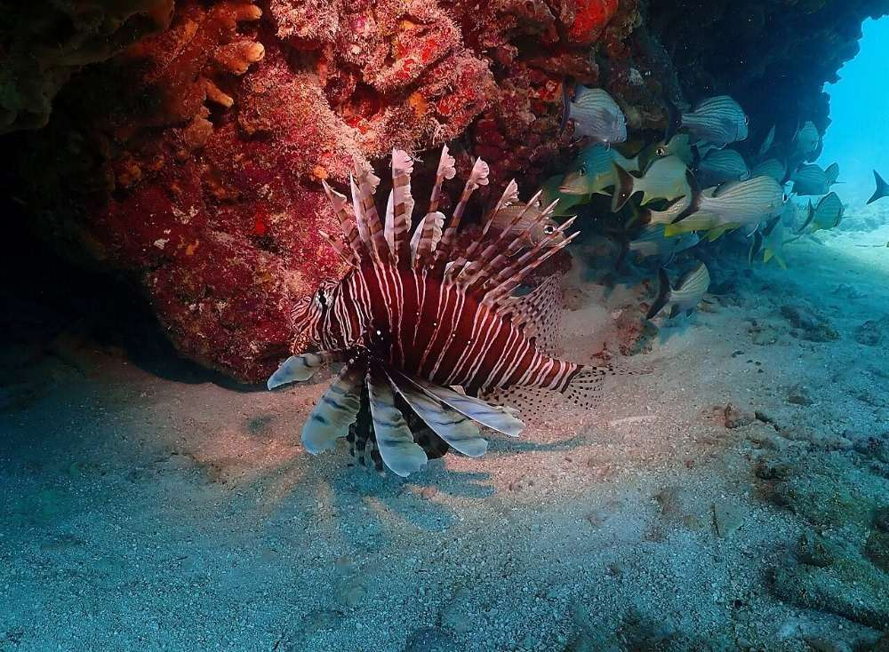
Lionfish come from the Pacific and Indian Oceans. In Florida they eat native reef fish that keep algae off the coral.
So Florida made a plan: pay divers to catch them, and count every one. In the 2026 Lionfish Challenge, divers removed more than 36,000 lionfish. The count is the evidence the plan is working.
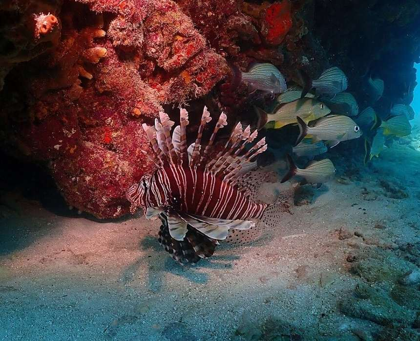
🕵️ Part 4Threat Files
What to do: Pick 3 threats, one at a time. Tap a clue, then name the threat. Predict a solution that fits, and watch it at work.
| Threat file | My observation | Threat | Solution | My evidence |
|---|
🌍 Rebuild the placeUse your evidence to rebuild the place OPTIONALOpen ▾
What to do: Pick one you solved. Pick the place it points to, then pick the living things that belong there.
Pick one from your chart and explain it.
Start with: "Threat __ is…"
Scene 3Self-Check
What is a habitat?
A student notices that pollution from a nearby road is washing into a park river and killing fish. What should their habitat protection proposal include?
Which of the following is the best example of a "criteria for success" in a habitat protection proposal?
Scene 4Assignment
🔍 Part APlan your proposal
What to do: Read each one. Pick the best answer, or type your answer.
1. List three different threats that could damage a national park habitat. Write one short sentence about what each one does.
2. For each threat you listed, name one kind of evidence a scientist could use to show it's real. (Example: "To prove pollution is a problem, test the water every month.")
3. Which threat will you write your protection proposal about?
🚀 Part BShort answer
What to do: Answer in complete sentences. Use your science words.
1. What problem did you describe in your proposal? Explain it in two complete sentences. Be specific about what is being harmed and why it matters.
2. What criteria did you choose for your proposal? Explain how you would know, by observing or measuring something, that your solution is actually working.
✍️ Write and explainMake the case for your proposal
What to do: Pick one from your evidence chart. Answer the three questions. Use at least two of the science words under the boxes.
Start with: "The threat I chose is… I know it's real because…"
Start with: "My solution is…"
Start with: "I will know it worked when I count or measure…"
🎨 Part CDraw and label
What to do: Draw your solution in action in the park. Label the threat it stops, and one thing you will count or measure to check it.
🎬 Your question from Scene 1Can you answer it now?
What do you still wonder about? Write your question here. Then answer it.
📋 My answersEverything you wrote, in one place
(Your answers show up here as you write.)
How to turn in: Copy your answers and paste them into the Canvas assignment. Or download the file and upload it. Then press Save my drawing in Part C and upload your drawing too.
✅ Checklist
What to do: Tap each item when it is done. Items you finish on the page check themselves.
- My evidence chart has 3 threat files and my explanation.
- Part A: my threats, evidence, and choice.
- Part B: questions 1 and 2.
- Part C: my drawing and both labels.
- Write and explain, with at least two science words.
🎬 Premiere my park proposalYour exhibit
What to do: Check your exhibit. Pick the one you wrote about, add your first name, then press Premiere film.
I observed…
The threat is…
My evidence…
It tells us…
🎞️ This film's frames
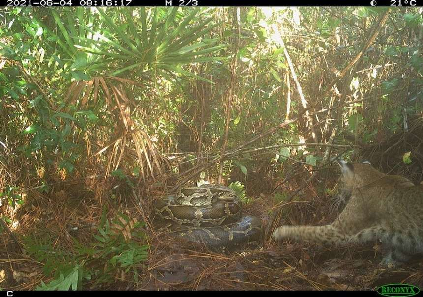
The proposal path
The Footprint Test
The River Comeback
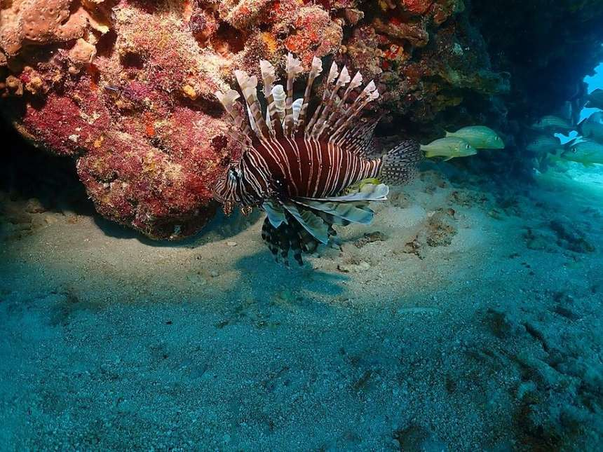
Threat files
Earn all four frames in the Lesson, then finish the checklist.
🔜 Coming up nextUnit 8 is complete
You finished Human Impact & Conservation! Next, Unit 9 begins: matter and energy.
Photo and music credits
- Breaking Ground of Tamiami Trail Bridge, NPSPhoto (7) (9247383577), Everglades NPS, Public domain
- Cropped lake okeechobee oli 2016184 lrg, NASA Earth Observatory (Joshua Stevens), Public domain
- Everglades Stormwater Treatment Areas, September 20, 2014 (15836177632), USEPA Environmental-Protection-Agency, Public domain
- Enemy number one in the Florida Keys, the Lionfish - 53048570899, Symbiosis, CC BY 2.0
- FGBNMS lionfish removal (48771004952), National Marine Sanctuaries, Public domain
- KENDAL LAKES HOUSING DEVELOPMENT ENCROACHES ON THE EVERGLADES NATIONAL PARK -…, Fred Ward, EPA DOCUMERICA, Public domain
- Big Cypress National Preserve BICY1060, National Park Service Digital Image Archives, Public domain
- On the beach (Miami) (38939920134), Mike McBey, CC BY 2.0
- Beach and dune walkovers on a cloudy day, Flagler County, Florida (September …, Ben1152000, CC BY-SA 4.0
- Snag forest at SJPSP, The Bushranger, CC BY-SA 4.0
- Mangrove Planting Restoration Project in Changkat Keruing, KUASACSR, CC BY-SA 4.0
- WO697 - Everglades National Park Great White Egret - DPLA - fc5ab4cb8d00fe017…, U.S. Fish and Wildlife Service, Public domain
- Drained wetland on the east side of Cortreasla Road - geograph.org.uk - 4306283, Eric Jones, CC BY-SA 2.0
- Kissimmee River Restoration, US Army Corps of Engineers, Public domain
- Belted kingfisher, Kissimmee River, South Florida Water Management District (via JaxStrong), CC BY 2.0
- Sawgrass Prairie NPS Photo G Gardner (42295786392), Everglades NPS, Public domain
- Bobcat encounters python nest Photo 1-k, Andrea F Currylow, Fort Collins Science Center, U.S. Geologi, Public domain
- Burmese python (6887388927), U.S. Fish and Wildlife Service Headquarters, Public domain
- Sylvilagus palustris 372890820, kcthetc1, CC0
- Everglades Sunrise, Allen Lubitz, Public domain
- Burmese Python, NPSPhoto, Rodney Cammauf (8721514008), Everglades NPS, Public domain
- Enemy number one in the Florida Keys, the Lionfish - 53048384166, Symbiosis, CC BY 2.0
- Kissimmee River Restoration 3, South Florida Water Management District (via JaxStrong), CC BY 2.0
- Kissimmee River canal section, Tony Santana, U.S. Army Corps of Engineers, Public domain
- Photo by USACE Kissimmee River Restoration backfilled canal and restored mean…, U.S. Army Corps of Engineers, Everglades Restoration, Kissim, Public domain
- Kissimmee River Restoration 4, South Florida Water Management District (via JaxStrong), CC BY 2.0
- Burmese Python (3), NPSPhoto, R. Cammauf (9099356709), Everglades NPS, Public domain
- Bobcat encounters python nest Photo 1-l, Andrea F Currylow, Fort Collins Science Center, U.S. Geologi, Public domain
- Burmese Python (10), NPSPhoto, R. Cammauf (9101585310), Everglades NPS, Public domain
- Marsh Rabbit, Tomfriedel, CC BY 3.0
- A Burmese python stretched out in the grass in the Everglades. 01, USGS, Public domain
- Kissimmee River Restoration 2, South Florida Water Management District (via JaxStrong), CC BY 2.0
- A Burmese python coiled in the grass in the Everglades, Bryan Falk, USGS, Public domain
- Starr-160717-5015-Sabal palmetto-boardwalk with Forest-Green Cay Nature Cente…, Forest and Kim Starr, CC BY 3.0 us
- Eroding paths - geograph.org.uk - 294424, Hugh Venables, CC BY-SA 2.0
- Enemy number one in the Florida Keys, the Lionfish - 53048875518, Symbiosis, CC BY 2.0
- Music: "Till Eulenspiegel's Merry Pranks" (Richard Strauss, 1895), played by the United States Navy Band, public domain (via Wikimedia Commons).
- Opti the owl: Optima Academy. Sound effects are made by the page. The hidden-python scan, the proposal movie, the Footprint Test, and the River Comeback are models; every place photo is real.